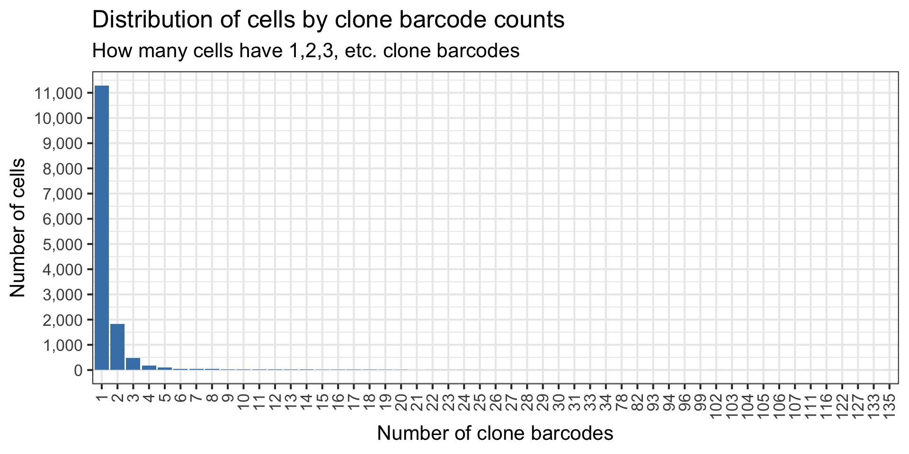
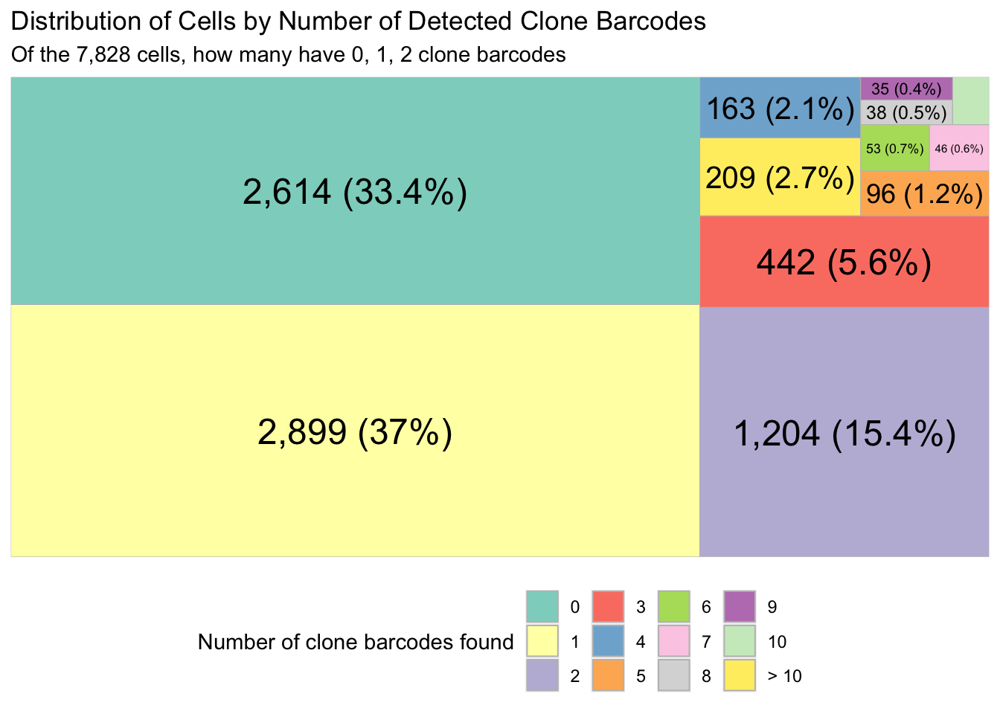

scRNAseq data analysis
Givanna Putri
2023-10-18
Last updated: 2023-10-20
Checks: 6 1
Knit directory: NextClone-analysis/
This reproducible R Markdown analysis was created with workflowr (version 1.7.0). The Checks tab describes the reproducibility checks that were applied when the results were created. The Past versions tab lists the development history.
The R Markdown is untracked by Git. To know which version of the R
Markdown file created these results, you’ll want to first commit it to
the Git repo. If you’re still working on the analysis, you can ignore
this warning. When you’re finished, you can run
wflow_publish to commit the R Markdown file and build the
HTML.
Great job! The global environment was empty. Objects defined in the global environment can affect the analysis in your R Markdown file in unknown ways. For reproduciblity it’s best to always run the code in an empty environment.
The command set.seed(20231011) was run prior to running
the code in the R Markdown file. Setting a seed ensures that any results
that rely on randomness, e.g. subsampling or permutations, are
reproducible.
Great job! Recording the operating system, R version, and package versions is critical for reproducibility.
Nice! There were no cached chunks for this analysis, so you can be confident that you successfully produced the results during this run.
Great job! Using relative paths to the files within your workflowr project makes it easier to run your code on other machines.
Great! You are using Git for version control. Tracking code development and connecting the code version to the results is critical for reproducibility.
The results in this page were generated with repository version e8b74da. See the Past versions tab to see a history of the changes made to the R Markdown and HTML files.
Note that you need to be careful to ensure that all relevant files for
the analysis have been committed to Git prior to generating the results
(you can use wflow_publish or
wflow_git_commit). workflowr only checks the R Markdown
file, but you know if there are other scripts or data files that it
depends on. Below is the status of the Git repository when the results
were generated:
Ignored files:
Ignored: .Rhistory
Ignored: .Rproj.user/
Untracked files:
Untracked: .DS_Store
Untracked: analysis/NGS_data_analysis.Rmd
Untracked: analysis/sc_data_analysis.Rmd
Untracked: data/.DS_Store
Untracked: data/cellranger_out/
Untracked: data/nextclone_out/
Untracked: data/pycashier_out/
Unstaged changes:
Modified: analysis/index.Rmd
Note that any generated files, e.g. HTML, png, CSS, etc., are not included in this status report because it is ok for generated content to have uncommitted changes.
There are no past versions. Publish this analysis with
wflow_publish() to start tracking its development.
Introduction
Working directory for NextClone run:
/vast/projects/Goel_senescence/nextclone_dev/07_analysis/pilot_dataset/02_run_nextclone/output_20231016
library(data.table)
library(ggplot2)
library(scales)
library(ggrepel)
library(DropletUtils)
library(treemapify)Load data
clones <- fread("data/nextclone_out/sc_clone_barcodes.csv")Wrangle the data so we have cell,clone,n_reads where n_reads refer to the number of times the cell,clone combination have been seen.
clones_exp <- clones[, .(n_reads = .N), by=c("CellBarcode", "CloneBarcode")]How many cells have exactly 1 clone barcode found?
# First count, for each cell, how many different clone barcodes are found.
barcode_diversity_per_cell <- clones_exp[, .(n_clone_barcode = .N), by='CellBarcode']
# 11,289, similar to what we found before, 11,379
barcode_diversity_per_cell[n_clone_barcode == 1, .N][1] 11289How many cells we can find the clone barcodes for?
# 14,270, about 180 cells less (previous numbers were 14,450).
nrow(barcode_diversity_per_cell)[1] 14270Plot the distribution of the clone barcode diversity, i.e. how many cells have x number of clone barcodes.
ggplot(barcode_diversity_per_cell, aes(x=factor(n_clone_barcode)))+
geom_bar(stat="count", fill="steelblue")+
theme_minimal() +
theme_bw(base_size = 16) +
theme(axis.text.x = element_text(angle = 90, vjust = 0.5, hjust=1)) +
scale_y_continuous(breaks = pretty_breaks(n = 15), labels = comma) +
labs(
y = "Number of cells",
x = "Number of clone barcodes",
title = "Distribution of cells by clone barcode counts",
subtitle = "How many cells have 1,2,3, etc. clone barcodes"
)
Hmm we have more cells with exactly 1 clone barcode. Good I guess?
Incorporating single cell data
The above analysis has only looked at the cells where we found the clone barcode. We need to cross it with the output of cell ranger as some of those cells are bound to be just ambient droplet.
sce <- read10xCounts("data/cellranger_out/filtered_feature_bc_matrix")as(<dgTMatrix>, "dgCMatrix") is deprecated since Matrix 1.5-0; do as(., "CsparseMatrix") insteadsceclass: SingleCellExperiment
dim: 36601 7828
metadata(1): Samples
assays(1): counts
rownames(36601): ENSG00000243485 ENSG00000237613 ... ENSG00000278817
ENSG00000277196
rowData names(3): ID Symbol Type
colnames: NULL
colData names(2): Sample Barcode
reducedDimNames(0):
mainExpName: NULL
altExpNames(0):Get the 10x cell barcode.
valid_cells_10x <- colData(sce)$BarcodeIntersect the 10x cell barcode to isolate those that have clone barcodes.
valid_cells_with_clones_10x <- intersect(
x = unique(clones_exp$CellBarcode),
y = valid_cells_10x
)
# So we have 5,214 cells that we found the clone barcodes for.
# That is out of 7,828 in our data.
length(valid_cells_with_clones_10x)[1] 5214# As a proportion? 0.67
length(valid_cells_with_clones_10x) / ncol(sce)[1] 0.6660705Isolate those cell barcodes.
# valid clones = all clone barcodes for valid cells (deemed by cellranger)
valid_cell_clone_barcodes <- clones_exp[CellBarcode %in% valid_cells_with_clones_10x]Tree map to show the proportion of 10x cells that have 0, 1, 2, .. clones found.
clone_count_per_cell <- valid_cell_clone_barcodes[, .(n_clone_barcode = .N), by='CellBarcode']
# we will add in those valid cells which we can't find any clone barcodes for, and
# assign n_clone_barcode as none
valid_cells_without_clones_10x <- setdiff(
x = valid_cells_10x,
y = unique(clones_exp$CellBarcode)
)
# Convert the n_clone_barcode that are > 10 to actually > 10, then append the 0s in for cells which we can't find
# the clone barcode for.
clone_count_per_cell_inc_zeros <- copy(clone_count_per_cell)
clone_count_per_cell_inc_zeros[, n_clone_barcode := ifelse(n_clone_barcode > 10, "> 10", as.character(n_clone_barcode))]
clone_count_per_cell_inc_zeros <- rbind(
clone_count_per_cell_inc_zeros,
data.table(
CellBarcode = valid_cells_without_clones_10x,
n_clone_barcode = rep(0, length(valid_cells_without_clones_10x))
)
)
# the level for the clone count per cell
clone_count_per_cell_level <- c(as.character(seq(0, 10)), "> 10")
clone_count_per_cell_inc_zeros[, n_clone_barcode := factor(n_clone_barcode, levels = clone_count_per_cell_level)]
# have to actually count the number of cells with 0, 1, 2, .. clone barcodes
n_cells_with_clone_count <- clone_count_per_cell_inc_zeros[, .(n_cells = .N), by=n_clone_barcode]
n_cells_with_clone_count <- n_cells_with_clone_count[order(n_clone_barcode)]
n_cells_with_clone_count[, perc_and_n_cells := paste0(
prettyNum(n_cells, big.mark = ","), " (",
round(100 * n_cells / dim(sce)[2], 1),
"%)")]
ggplot(n_cells_with_clone_count, aes(fill = n_clone_barcode, area = n_cells, label = perc_and_n_cells)) +
geom_treemap() +
geom_treemap_text(colour = "black",
place = "centre") +
labs(
title = "Distribution of Cells by Number of Detected Clone Barcodes",
subtitle = paste("Of the", prettyNum(dim(sce)[2], big.mark = ","), "cells, how many have 0, 1, 2 clone barcodes"),
fill = "Number of clone barcodes found"
) +
theme(legend.position = "bottom") +
scale_fill_brewer(palette = "Set3")
Digging into cells with multiple clone barcodes
Cells with multiple clone barcodes may well be doublets. But the point now is we want to see what are the expression of the 1st ranked, 2nd ranked, etc. clone barcode.
multiclone_cells <- clone_count_per_cell[n_clone_barcode > 1,]$CellBarcode
# The number of reads for each clone, for cells with multiple clones
multiclone_cell_read_counts <- valid_cell_clone_barcodes[CellBarcode %in% multiclone_cells]
# Order the table so for each cell barcode, we have clone with the most reads at the top
multiclone_cell_read_counts <- multiclone_cell_read_counts[order(CellBarcode, -n_reads)]
# Add ranking to the clones based on the number of reads
multiclone_cell_read_counts[, ranking := frank(-n_reads, ties.method = "random"), by=CellBarcode]How many cells does the 1st ranked clone barcode made up more than 50% of the reads mapped to the cell?
# calculate proportion of reads first
multiclone_cell_read_counts[, prop_reads := n_reads / sum(n_reads), by=CellBarcode]
# Now check the numbers
# 78.2% if >= 0.5
nrow(multiclone_cell_read_counts[ranking == 1 & prop_reads >= 0.5]) / length(multiclone_cells)[1] 0.7818575# actual number? 1,810
nrow(multiclone_cell_read_counts[ranking == 1 & prop_reads >= 0.5])[1] 1810# 70.4% if > 0.5
nrow(multiclone_cell_read_counts[ranking == 1 & prop_reads > 0.5]) / length(multiclone_cells)[1] 0.7045356# actual number? 1,631
nrow(multiclone_cell_read_counts[ranking == 1 & prop_reads > 0.5])[1] 1631# plot as ggplot?
# restrict to just top 10
multiclone_cell_read_counts_top10 <- multiclone_cell_read_counts[ranking <= 10,]ggplot(multiclone_cell_read_counts_top10, aes(x=factor(ranking), y=prop_reads)) +
geom_violin(aes(fill = factor(ranking))) +
theme_bw(base_size=18) +
scale_y_continuous(breaks=pretty_breaks(n=20)) +
labs(x = 'Ranking',
fill = 'Ranking',
y = 'Proportion of reads',
title = 'Read Distribution of Clones in Multiclone Cells',
subtitle = "Only for top 10 most abundant clones"
) +
theme(axis.text.x = element_text(angle = 90, vjust = 0.5, hjust=1))
sessionInfo()R version 4.2.3 (2023-03-15)
Platform: aarch64-apple-darwin20 (64-bit)
Running under: macOS 14.0
Matrix products: default
BLAS: /Library/Frameworks/R.framework/Versions/4.2-arm64/Resources/lib/libRblas.0.dylib
LAPACK: /Library/Frameworks/R.framework/Versions/4.2-arm64/Resources/lib/libRlapack.dylib
locale:
[1] en_US.UTF-8/en_US.UTF-8/en_US.UTF-8/C/en_US.UTF-8/en_US.UTF-8
attached base packages:
[1] stats4 stats graphics grDevices utils datasets methods
[8] base
other attached packages:
[1] treemapify_2.5.6 DropletUtils_1.18.1
[3] SingleCellExperiment_1.20.0 SummarizedExperiment_1.28.0
[5] Biobase_2.58.0 GenomicRanges_1.50.2
[7] GenomeInfoDb_1.34.9 IRanges_2.32.0
[9] S4Vectors_0.36.1 BiocGenerics_0.44.0
[11] MatrixGenerics_1.10.0 matrixStats_0.63.0
[13] ggrepel_0.9.3 scales_1.2.1
[15] ggplot2_3.4.1 data.table_1.14.8
[17] workflowr_1.7.0
loaded via a namespace (and not attached):
[1] httr_1.4.4 edgeR_3.40.2
[3] sass_0.4.5 jsonlite_1.8.4
[5] scuttle_1.8.4 DelayedMatrixStats_1.20.0
[7] R.utils_2.12.2 bslib_0.4.2
[9] getPass_0.2-2 highr_0.10
[11] dqrng_0.3.0 GenomeInfoDbData_1.2.9
[13] yaml_2.3.7 pillar_1.8.1
[15] lattice_0.20-45 limma_3.54.1
[17] glue_1.6.2 beachmat_2.14.0
[19] digest_0.6.31 RColorBrewer_1.1-3
[21] promises_1.2.0.1 XVector_0.38.0
[23] colorspace_2.1-0 htmltools_0.5.4
[25] httpuv_1.6.9 Matrix_1.5-3
[27] R.oo_1.25.0 pkgconfig_2.0.3
[29] zlibbioc_1.44.0 processx_3.8.0
[31] HDF5Array_1.26.0 whisker_0.4.1
[33] later_1.3.0 BiocParallel_1.32.5
[35] git2r_0.31.0 tibble_3.1.8
[37] farver_2.1.1 generics_0.1.3
[39] cachem_1.0.6 withr_2.5.0
[41] cli_3.6.1 magrittr_2.0.3
[43] evaluate_0.20 ps_1.7.2
[45] R.methodsS3_1.8.2 fs_1.6.1
[47] fansi_1.0.4 tools_4.2.3
[49] lifecycle_1.0.3 stringr_1.5.0
[51] Rhdf5lib_1.20.0 locfit_1.5-9.7
[53] munsell_0.5.0 DelayedArray_0.24.0
[55] callr_3.7.3 compiler_4.2.3
[57] jquerylib_0.1.4 rlang_1.0.6
[59] rhdf5_2.42.0 grid_4.2.3
[61] RCurl_1.98-1.10 rhdf5filters_1.10.0
[63] rstudioapi_0.14 bitops_1.0-7
[65] rmarkdown_2.20 gtable_0.3.1
[67] codetools_0.2-19 R6_2.5.1
[69] knitr_1.42 dplyr_1.1.0
[71] fastmap_1.1.0 utf8_1.2.3
[73] rprojroot_2.0.3 stringi_1.7.12
[75] parallel_4.2.3 Rcpp_1.0.10
[77] ggfittext_0.10.1 vctrs_0.5.2
[79] tidyselect_1.2.0 xfun_0.39
[81] sparseMatrixStats_1.10.0